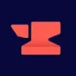
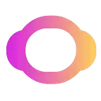

ContentForgeНейросети
ContentForge используют для задачи: готовить текст по теме и требованиям к содержанию. Ещё одно направление работы: подготавливать материалы для социальных сетей.
Нейросети: Проверьте один рабочий запрос с вашими материалами. Сравните точность, контекст и возможность проверить результат.
Начните с одного конкретного результата: текста, изображения или разбора документа. Навигация Молекулы помогает найти нужный раздел; условия доступности функции проверьте в своём кабинете.
Мне нужен понятный ответ клиенту по условиям доставки из предоставленного документа. Помоги сформулировать задание модели и перечень проверок ответа. Недостающие условия оставь открытыми.


ContentForge используют для задачи: готовить текст по теме и требованиям к содержанию. Ещё одно направление работы: подготавливать материалы для социальных сетей.

CustomGPT.ai используют, чтобы готовить ответы на обращения клиентов. Ещё одно направление работы: собирать видео с цифровым ведущим.
В инструменте «DeepAI Text Generator» можно готовить текст по теме и требованиям к содержанию.

Estimatic AI относится к инструментам, которые помогают работать с информацией о недвижимости. Ещё одно направление работы: разбирать содержимое документов.

Final Round AI помогает готовить материалы для собеседований и последующего трудоустройства. В наборе предусмотрены работа с резюме, карточки распространённых вопросов и помощь с заданиями по программированию. Продукт также описывает сопровождение интервью, объединяя подготовку ответов с разбором требований новой карьерной роли.

H2O.ai рассчитан на задачи, где нужно готовить текст по теме и требованиям к содержанию. Ещё одно направление работы: подготавливать озвучку текстового материала.

Highlight AI используют, чтобы сокращать материал до основных положений. Ещё одно направление работы: готовить ответы на обращения клиентов.
Ollama запускает языковые модели локально и предоставляет API для приложений. Позволяет подобрать модель под ресурсы устройства и построить собственный процесс обработки запросов.

Sudowrite рассчитан на задачи, где нужно редактировать уже написанный материал. Ещё одно направление работы: готовить текст по теме и требованиям к содержанию.
Tempo используют для задачи: писать и изменять программный код. Ещё одно направление работы: создавать и уточнять визуальный макет.

Topaz Video AI используют, чтобы собирать видеосцену по описанию или визуальному исходнику. Ещё одно направление работы: готовить видеоматериалы для публикации.

В инструменте «Turbo AI» можно собирать видеосцену по описанию или визуальному исходнику. Ещё одно направление работы: переводить записанную речь в текст.

APIHOST.RU используют, чтобы подготавливать озвучку текстового материала. Ещё одно направление работы: собирать видеосцену по описанию или визуальному исходнику.

ContentBot используют, чтобы готовить текст по теме и требованиям к содержанию. Ещё одно направление работы: подготавливать материалы для социальных сетей.

DataRobot помогает строить и сравнивать модели машинного обучения, получать прогнозы и контролировать их после развёртывания. Платформа также поддерживает генеративные и агентные сценарии.

В инструменте «Grow with Google» можно готовить учебный материал и объяснения. Ещё одно направление работы: разбирать запросы в диалоге с моделью.

Ideogram используют для генерации изображений и визуальных идей с надписями. Для рабочего макета важно отдельно проверить написание текста, композицию и пригодность файла.
Merlyn рассчитан на задачи, где нужно обрабатывать голосовые обращения. Ещё одно направление работы: готовить учебный материал и объяснения.

Microsoft Copilot помогает обсуждать вопросы и готовить рабочие материалы. Личный помощник, Copilot в приложениях Microsoft 365 и средства разработки имеют разные условия и способы доступа к данным.

OpenArt предоставляет ИИ-инструменты для создания изображений и их дальнейшего изменения. Продукт ориентирован в том числе на художественные ресурсы, которые автор может редактировать. Генерация и обработка объединены, чтобы пользователь продолжал работу над выбранным визуальным материалом в пределах инструмента.

В инструменте «Reve Image» можно получать изображения из словесного задания. Ещё одно направление работы: менять фотографии с учётом выбранного оформления.

SciSpace объединяет поиск научных публикаций и диалог по PDF. Помогает разбирать сложные фрагменты, сравнивать найденные работы и связывать ответы с разделами исходного документа.

SeaArt AI помогает создавать рисунки с использованием разных ИИ-моделей. Продукт предоставляет библиотеку моделей и рекомендации, дополняющие подготовку изображения. Взаимодействие с сообществом также входит в описанные возможности, связывая визуальную работу автора с просмотром и обсуждением художественных материалов.

Simplified рассчитан на задачи, где нужно готовить материалы о товарах и услугах. Ещё одно направление работы: собирать видеосцену по описанию или визуальному исходнику.

StarryAI создаёт изображения из текстового описания с участием ИИ. Пользователь задаёт замысел словами и настраивает полученный визуальный вариант. Приложение представлено для мобильных устройств на iOS и Android, позволяя работать над художественным изображением в выбранной среде своего телефона.

Suno помогает создавать песни и музыкальные наброски по заданию. Можно описать характер звучания и подобрать вариант для самостоятельной композиции, заставки или сопровождения видео.

Trinka проверяет грамматику и предлагает языковые изменения для академических и технических материалов. Инструмент также даёт рекомендации по написанию и проверяет заимствования. Пользователь рассматривает правки своего текста вместе с замечаниями, которые относятся к его формулировкам и письменному оформлению.

Verbit рассчитан на задачи, где нужно переводить записанную речь в текст. Ещё одно направление работы: обрабатывать голосовую запись.

Copysmith используют, чтобы редактировать уже написанный материал. Ещё одно направление работы: готовить текст по теме и требованиям к содержанию.

Harvey AI используют, чтобы готовить текст по теме и требованиям к содержанию. Ещё одно направление работы: разбирать текст договора и связанные документы.

LangSmith помогает наблюдать и оценивать работу приложений с языковыми моделями. Для анализа полезно сохранять запрос, промежуточные действия и итоговый ответ вместе.

Moodbox используют, чтобы собирать видео с цифровым ведущим. Ещё одно направление работы: работать с заданным образом ИИ-персонажа.

ProWritingAid относится к инструментам, которые помогают превращать материалы в рабочие заметки. Ещё одно направление работы: сокращать материал до основных положений.

Resticker используют для задачи: менять фотографии с учётом выбранного оформления. Ещё одно направление работы: получать изображения из словесного задания.

Typli.ai помогает писать материалы для поискового продвижения с участием ИИ. В продукте представлены проверка заимствований и оценка поискового трафика ключевых слов. Пользователь может экспортировать подготовленный контент, связывая написание текста с рассмотрением запросов и дальнейшей работой над публикацией.

AnythingLLM помогает построить диалог вокруг собственных материалов. Модель и место хранения выбираются под требования к данным и способу размещения приложения.

Claude работает с текстами, документами и задачами разработки. Помощнику можно передать исходные материалы, уточнить требования к результату и продолжить редактуру в том же разговоре.

Cursor помогает разбирать репозиторий и менять связанные файлы через ИИ-агента в редакторе. Правила проекта и контекст текущей задачи направляют работу помощника; результат проверяют по готовому патчу.

Dust.tt относится к инструментам, которые помогают связывать действия в автоматизированный процесс. Ещё одно направление работы: готовить ответы на обращения клиентов.

ImagineArt используют, чтобы собирать видеосцену по описанию или визуальному исходнику. Ещё одно направление работы: менять фотографии с учётом выбранного оформления.

В инструменте «insMind» можно собирать видеосцену по описанию или визуальному исходнику. Ещё одно направление работы: менять фотографии с учётом выбранного оформления.

Kling AI создаёт видео и изображения по описанию и исходным кадрам. Для коротких сцен полезно заранее определить действие, движение камеры и признаки, которые должны сохраняться.

Logically относится к инструментам, которые помогают готовить текст по теме и требованиям к содержанию. Ещё одно направление работы: сокращать материал до основных положений.
SchoolAI используют, чтобы собирать видео с цифровым ведущим. Ещё одно направление работы: готовить учебный материал и объяснения.

Stability AI относится к инструментам, которые помогают собирать видеосцену по описанию или визуальному исходнику. Ещё одно направление работы: получать изображения из словесного задания.
TRAE относится к инструментам, которые помогают писать и изменять программный код. Ещё одно направление работы: исследовать устройство программного проекта.
Страница 4 из 4